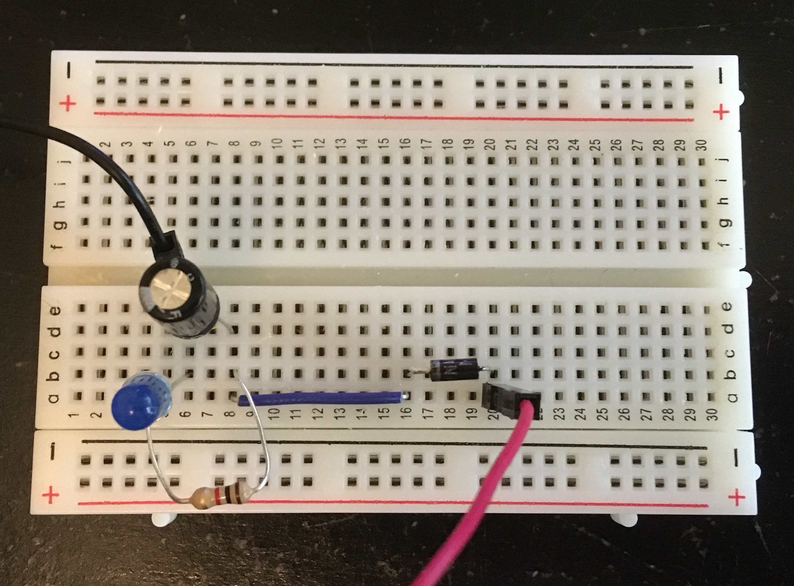
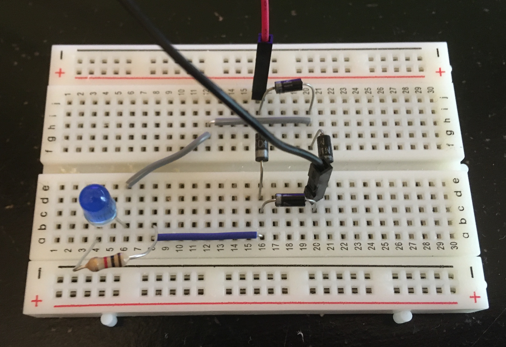

Introduction

iPhone Camera Settings

Required Supplies
Capacitor Explodes Under Reverse Voltage
Single Diode Rectifier
No Smoothing Capacitors

Breadboard Circuit: Single Diode Rectifier
Single Diode Rectifier - Real Time
Single Diode Rectifier - Slow Motion
In the below video, I took one second of video from the slow motion clip and slowed it down 5 times further in iMovie. Looking at the clip, one can count 7 flashes of the LED. Since the slow motion video from the iPhone is played back at 1/4 speed, this means that the true duration of the clip below is only a quarter second. If the LED flashed 7 times in a quarter second, it would flash approximately 28 times in one second. This checks out as we expect the half-wave signal coming through the single diode rectifier from the 60 Hz wall outlet AC source to have a frequency of 30 Hz. There's some error given the small period of time I chose to examine. If I examine a longer interval, the error should decrease. Repeating the same process, but this time for a 2 second clip from the slow motion video, I counted 15 flashes of the LED. 15 flashes over half a second would result in exactly 30 Hz.
Single Diode Rectifier - Super Slow Motion
One Smoothing Capacitor

Breadboard Circuit: Single Diode Rectifier with One Capacitor
Single Diode Rectifier with One Smoothing Capacitor - Real Time
Single Diode Rectifier with One Smoothing Capacitor - Slow Motion
Many Smoothing Capacitors

Breadboard Circuit: Single Diode Rectifier with Many Capacitors
Single Diode Rectifier with Many Smoothing Capacitors - Real Time
Single Diode Rectifier with Many Smoothing Capacitors - Slow Motion
Full Bridge Rectifier
No Smoothing Capacitors
Breadboard Circuit: Full Bridge Rectifier
Full Bridge Rectifier - Real Time
Full Bridge Rectifier - Slow Motion
In the below video, I took one second of video from the slow motion clip and slowed it down 10 times further in iMovie. Looking at the clip, one can count 15 flashes of the LED. Since the slow motion video from the iPhone is played back at 1/4 speed, this means that the true duration of the clip below is only a quarter second. If the LED flashed 15 times in a quarter second, it would flash approximately 60 times in one second. This checks out as we expect the full-wave signal coming through the full bridge rectifier from the 60 Hz wall outlet AC source to also have a frequency of 60 Hz.
Full Bridge Rectifier - Super Slow Motion
One Smoothing Capacitor

Breadboard Circuit: Full Bridge Rectifier with One Capacitor
Full Bridge Rectifier with One Smoothing Capacitor - Real Time
Full Bridge Rectifier with One Smoothing Capacitor - Slow Motion
Many Smoothing Capacitors

Breadboard Circuit: Full Bridge Rectifier with Many Capacitors
Full Bridge Rectifier with Many Smoothing Capacitors - Real Time
Full Bridge Rectifier with Many Smoothing Capacitors - Slow Motion